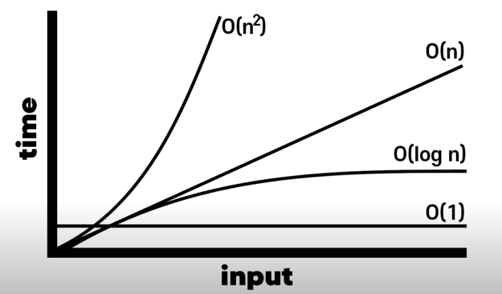

DynamicProgramming and BFS, DFS
알고리즘 강의 노트
2022-03-18 22:20
Algorithm: Program Solving(c++)
작성자: SungwookLE
작성일: 2022년 3월 14일 GoGoGo
1. 본 페이지에서는 무엇을 배우나요?
1-1. 문제해결, Program Solving(PS)을 위한 알고리즘 설계 문제를 배웁니다.
-
다른 말로, 코딩테스트 문제라고 불러요 😢
-
본 페이지는 아래 강의를 따라가며 작성하였어요.
1-2. 데이터베이스나 복잡한 구조에서 효율적인 알고리즘(Big O) 설계를 위한 방법을 배웁니다.
-
시각복잡도
Big O에 대해 알아봐요 👊
1-3. 효율적인 알고리즘 만큼 중요한 것은 Clean Code 작성이라는 사실!
-
Variable, Function, Class 의 이름만 잘 지어도 Clean Code가 될 수 있어요. 💯
2. 시간복잡도(BigO) 먼저 짚고 시작해요
- 알고리즘의 효율성의 가장 기본적인 비교 메트릭은
BigO방법이예요.
`BigO`는 인풋 사이즈(`N`)에 대한 함수의 실행횟수를 말합니다.

- 다음의 대표적인 방식에 대한
BigO를 계산해보면,- 인풋 배열(사이즈N)에서 하나의 값을 바로 출력:
O(1) - 인풋 배열(사이즈N)을 1중 for문으로 조회:
O(N) - 인풋 배열(사이즈N)을 2중 for문(nested loop)으로 조회:
O(N^2) - 인풋 배열(사이즈N)을 n중 for문(nested loop)으로 조회:
O(N^n) - 인풋 배열(사이즈N)을 Binary Search 알고리즘으로 특정 값을 출력:
O(logN)-
Binary Search 알고리즘은 인풋 배열을 매 스텝마다 반으로 잘라 왼쪽과 오른쪽으로 쪼개나가며 특정 값을 찾아나가는 특징이 있는 알고리즘이예요.
void binary_search(input_array){ if (특정값 찾기 성공) return answer; else{ left_side = input_array[0:mid] right_side = input_array[mid:-1] binary_sarch() } }- Binary Search 알고리즘의
BigO실행횟수(step)는logN이 됩니다. BigO표기법에서는log의밑 2를 표기하지 않고 생략하니 참고하세요.-
Binary Search 알고리즘을 사용하여, 32개의 인풋사이즈를 갖는 배열의 특정 값을 찾는 경우를 생각해봅시다.
32개의 인풋 배열이 입력되면, 32 / 2 = 16 <- 1 step 16 / 2 = 8 <- 2 step 8 / 2 = 4 <- 3 step 4 / 2 = 2 <- 4 step 2 / 2 = 1 <- 5 step 특정값을 찾는 worst case를 가정하고 살펴보아도 최대 실행횟수는 logN = 5 가 되네요.
- Binary Search 알고리즘의
-
- 인풋 배열(사이즈N)에서 하나의 값을 바로 출력:
- 공간복잡도에 대해서도 알아두면 좋아요. (메모리 관점)
BigO표현법 기준으로 배열의 최대 사이즈가 공간복잡도입니다.- 프로그램의 소요시간 뿐만 아니라, 사용되는 메모리도 중요합니다. 여러분들의 컴퓨터의 메모리는 한정되어 있기 때문에, 똑같은 프로그램이면 차지하는 메모리가 적은게 더 좋겠죠? 그렇기 때문에 시간복잡도 뿐만 아니라 공간복잡도도 중요합니다.
- 보통 메모리를 계산하는 경우에는 C++을 기준으로 생각합니다. C++ 에서는 int가 4 byte, char이 1 byte, double이 8 byte, short가 2 byte 이렇게 정해져 있습니다.
-
int로 2천만이 대략 80 MB라는 것을 이용하여 다음과 같이 쉽게 계산이 가능합니다.
int a[2천만] : 80MB int a[2백만] : 80 / 10 = 8MB char a[2천만] : 80 / 4 = 20MB double a[2천만] : 80 * 2 = 160MB int1개(4byte) x 2천만 = 80,000,000 = 80*10^6 = 80 MB-
예제를 살펴봅시다.
function solution(n) set list = [n][n][n] for i= 0 ... i < n set tmp = [n] for j = 0 ... j < n tmp[j] = list[0][i][j]- 정답: 공간복잡도는 배열 최대 크기인 O(N^3) 이고, 참고로 시간복잡도는 O(N^2)
3. PS Dynamic Programming 동적 프로그래밍
- Dynamic Programming = 분할정복 프로그래밍 = 점화식 배열
- 분할정복 풀이: Bottom-up 방식으로 점화식(recurrence relation)을 유도하여 풀자
- 문제를 직접 풀려고
if문을 생각하게 되면, 여러 예외조건에 막혀 문제를 풀 수 없게된다는 것을 명심 - 분할정복 문제는 배열을 이용해서 풀게되는데, 이 때!,
0번째 케이스에 대한 값을 {공집합, 0}과 같은 default 값을 넣어줌으로써trivial case에 대한 값을 명시적으로 배열을 채워서 풀자. - Top-down 방식으로 풀어야하는 문제도 있으나, 대부분 Bottom-up 방식이 풀기 쉽다.
- 문제를 직접 풀려고
3.1. 컨셉
- 수열의 n번째 값 a_n을 구하기 위해 따라야 하는 규칙
- a_n을 구하기 위해서는, a_1부터 순서대로 계산해야 함
- Bottom-up 방식으로 동적 프로그래밍을 위한 점화식 배열 문제 풀기
-
배열을 이용한 점화식 풀이 방법


-
실제 코딩테스트 문제는
점화식을 주지 않으니, 직접 유도해야 한다.
int main(){ int n ; cin >> n; vector<int> arr = {3}; //bottom-up 방식 for(int i = 1 ; i <= n ; ++i) arr.push_back(arr[i-1]*2 -4); cout << arr[n] << endl; return 0; }
3-2. 개념문제(1차원)
큰 문제를 작은 문제부터 해결하여 계산하기: 1차원 배열
-
특정 금액을 만들 수 있는 동전의 최소 개수를 찾아라

-
풀이: 20원으로 조합되기 위한 조합의 수는 15원의 조합+1 또는 17원의 조합+1 의 조합의 수를 갖는다.

-
점화식(recurrent function):

-
DP 배열 설계:

-
코드:
int main(){ int N; cin >> N; vector<int> DP(N+1, 0); //bottom - up // 1) 초항 DP[0] = 0; DP[1] = X; DP[2] = X; DP[3] = 1; DP[4] = X; DP[5] = 1; // 2) 점화식 // DP[6] = min(DP[6-3]+1 , DP[6-5]+1); // = min(DP[3]+1, DP[1]+1); // = min(DP[3]+1) for(int i = 6 ; i <= N ; ++i){ if (DP[i-3] == X){ if (DP[i-5] == X) DP[i] = X; else if (DP[i-5] != X) DP[i] = DP[i-5]+1; } else if (DP[i-3] != X){ if (DP[i-5] == X) DP[i] = DP[i-3]+1; else if (DP[i-5] != X) DP[i] = min(DP[i-3]+1, DP[i-5]+1); } } cout << DP[N] << endl; return 0; }
-
3-3. 연습문제(2차원)
큰 문제를 작은 문제부터 해결하여 계산하기: 2차원 배열
-
가방에 담을 수 있는 보석의 최대 값어치를 담아서 훔쳐라

-
풀이: 작은 문제들을 풀어나가는 과정을 통해 N=4, K=14라고 하였을 때의 최대 값어치를 찾아보는 것을 생각해보자.


-
점화식:
if (j >= W) DP[i][j] = max(DP[i-1][j], DP[i-1][j-W]+current_price) // 배낭의 무게 허용량(j)이 보석의 무게(W)보다 크다면, 새로운 보석을 넣었을 때와 넣지 않았을 때의 max값이 가방에 들어갈 수 있는 보석의 최대값어치이다. else if (j < W) DP[i][j] = DP[i-1][j] // 보석의 무게(W)가 배낭 허용량(j)보다 무거운 케이스 -
코드
int main(){ int N, K; cin >> N >> K; vector<vector<int>>DP(N+1, vector<int>(K+1,0)); for(int i = 1 ; i <= N ; ++i){ int W, P; cin >> W >> P; for(int j = 1; j <= K; ++j){ if ( j >= W ) DP[i][j] = max(DP[i-1][j] , DP[i-1][j-W] + P); else if ( j < W) DP[i][j] = DP[i-1][j]; } } cout << DP[N][K] << endl; return 0; }
-
-
주어진 두개의 문자열의
LCS(Longest Common Sequence)를 찾아라
- 풀이: 작은 문제들을 풀어나가는 과정을 통해
LCS를 찾아내자. - 문제의 조건에서
LCS는 연속적일 문자열일 필요는 없었다. -
점화식:

vector<vector<int>> DP(A.length()+1, vector<int>(B.length()+1,0)); string A_token_last; for(int i = 1 ; i <= A.length(); ++i){ A_token_last = A[i-1]; string B_token_last; for(int j = 1 ; j <= B.length(); ++j){ B_token_last = B[j-1]; if (A_token_last == B_token_last) DP[i][j] = DP[i-1][j-1]+1; //두 문자열의 마지막 문자가 같다면, LCS("A문자열에서 마지막 문자 제거", "B문자열에서 마지막 문자 제거") + 1 의 값의 DP[i][j]의 LCS 최대값 else DP[i][j] = max(DP[i-1][j], DP[i][j-1]); //두 문자열의 마지막 문자가 다르다면, max(LCS("A문자열", "B문자열에서 마지막 문자 제거"), LCS("A문자열에서 마지막 문자 제거", "B문자열")) } } -
코드
int main(){ string A, B; cin >> A >> B; vector<vector<int>> DP(A.length()+1, vector<int>(B.length()+1,0)); string A_token_last; for(int i = 1 ; i <= A.length(); ++i){ A_token_last = A[i-1]; string B_token_last; for(int j = 1 ; j <= B.length(); ++j){ B_token_last = B[j-1]; if (A_token_last == B_token_last) DP[i][j] = DP[i-1][j-1]+1; else DP[i][j] = max(DP[i-1][j], DP[i][j-1]); } } for(auto elements : DP){ for(auto element : elements) cout << element << " "; cout << endl; } cout << "ANSWER: " << DP[A.length()][B.length()] << endl; return 0; }
- 풀이: 작은 문제들을 풀어나가는 과정을 통해
- 프로그래머스 문제: 최소 N을 사용하여 주어진 number를 만드는 개수를 찾아라
- 문제: N으로표현
-
문제 설명:
아래와 같이 5와 사칙연산만으로 12를 표현할 수 있습니다. 12 = 5 + 5 + (5 / 5) + (5 / 5) 12 = 55 / 5 + 5 / 5 12 = (55 + 5) / 5 5를 사용한 횟수는 각각 6,5,4 입니다. 그리고 이중 가장 작은 경우는 4입니다. 이처럼 숫자 N과 number가 주어질 때, N과 사칙연산만 사용해서 표현 할 수 있는 방법 중 N 사용횟수의 최솟값을 return 하도록 solution 함수를 작성하세요. * 제한사항 N은 1 이상 9 이하입니다. number는 1 이상 32,000 이하입니다. 수식에는 괄호와 사칙연산만 가능하며 나누기 연산에서 나머지는 무시합니다. 최솟값이 8보다 크면 -1을 return 합니다.
-
문제 풀이: bottom-up으로 풀 수 있는 배열을 설계하여 풀자(
점화식)
-
코드:
#define max_K 8 using namespace std; int get_Ns(int N, int idx){ int Ns=N; for(int i = 1 ; i < idx ; ++i){ Ns = Ns*10 + Ns; } return Ns; } int main(){ int N, number; cin >> N >> number; vector<unordered_set<int>> DP(max_K+1); DP[0].insert(0); //trivial case for(int k = 1; k <= max_K; ++k){ DP[k].insert(get_Ns(N, k)); for(int i = 1 ; i <= k; ++i){ for(int j = 1; j<= k ; ++j){ if ((i+j) != k) continue; for(int p : DP[i]){ for(int q: DP[j]){ DP[k].insert(p+q); DP[k].insert(p*q); if ( p - q > 0) DP[k].insert(p-q); if ( p / q > 0 ) DP[k].insert(p/q); } } } } if( DP[k].find(number) != DP[k].end()){ cout << "Find: " << *(DP[k].find(number)) << endl; // cout << "ANSWER: " << k << endl; return k; } } cout << "ANSWER: " << -1 << endl; return -1; }
- 프로그래머스 문제: 삼각형의 최대 합을 찾아라
- 문제: 정수삼각형
-
문제 설명:

- 위와 같은 삼각형의 꼭대기에서 바닥까지 이어지는 경로 중, 거쳐간 숫자의 합이 가장 큰 경우를 찾아보려고 합니다. 아래 칸으로 이동할 때는 대각선 방향으로 한 칸 오른쪽 또는 왼쪽으로만 이동 가능합니다. 예를 들어 3에서는 그 아래칸의 8 또는 1로만 이동이 가능합니다.삼각형의 정보가 담긴 배열 triangle이 매개변수로 주어질 때, 거쳐간 숫자의 최댓값을 return 하도록 solution 함수를 완성하세요.
- 제한사항삼각형의 높이는 1 이상 500 이하입니다.삼각형을 이루고 있는 숫자는 0 이상 9,999 이하의 정수입니다
1. 문제 풀이: bottom-up으로 풀 수 있는 배열을 설계하여 풀자(
점화식) - 처음 생각한 방식은 삼각형의 위에서 부터 모든 경로에 대한 경우의 수를 따지는 것은 동적프로그래밍이라기 보다는 브루트포스 방식(모든 경우를 naive하게 전부 계산)가 된다.
-
삼각형의 밑변에서 부터 시작하여 최대 합이 나오는 것을 선택해주면 모든 경우의 수를 따지지 않고서 삼각형 경로의 최대합을 구할 수 있다.
DP[i][j] = max( DP[i-1][j] + triangle[height-i][j-1],DP[i-1][j+1] + triangle[height-i][j-1]);
-
코드:
int main(){ // triangle 값 입력받기 int height; cin >> height; vector<vector<int>> triangle(height); int element; for(int i = 1 ; i <= height ; ++i){ for (int j = 1 ; j <= i ; ++j){ cin >> element; triangle[i-1].push_back(element); } } //solution cout << endl; cout << "DP array below: "<< endl; vector<vector<int>> DP(height+1, vector<int>(height+2,0)); for(int i = 1; i <= height; ++i){ for(int j = 1; j <= height - (i-1); ++j){ DP[i][j] = max( DP[i-1][j] + triangle[height-i][j-1], DP[i-1][j+1] + triangle[height-i][j-1]); cout << DP[i][j] << " "; } cout << endl; } cout << endl << "ANSWER: " << DP[height][1] << endl; return 0; }
4. PS 그래프 탐색 BFS, DFS
- 그래프(Graph)는 노드(상태)와 엣지로 이루어져 있음
- 그래프 탐색 알고리즘은
BFS(너비우선탐색)와DFS(깊이우선탐색) 알고리즘으로 나뉜다.BFS(Breadth First Search, 너비우선탐색)- 탐색 후, 노드 방문
- 큐(
queue)를 사용하여 문제 해결 - 큐(
queue)는 Last In Last Out의 데이터 배열 자료구조를 말해요 - 큐(
queue)의 역할은 탐색한 노드(방문 예정 노드)를 저장하는 역할을 합니다.
DFS(Depth First Search, 깊이우선탐색)- 즉시 노드를 방문 (탐색 X)
- 스택(
stack)을 사용하여 문제 해결 - 스택(
stack)은 Last In First Out의 데이터 배열 자료구조를 말해요 - 스택(
stack)의 역할은 지금까지 방문한 노드를 모두 저장하는 역할을 합니다. (Trace)
4-1. BFS, DFS 컨셉 및 개념문제
- 다리로 이어져 있는 군도에서 목표 섬에 가는 경로를 찾아라
- 문제 설명
- 지웅이는 A 위치에서 목적지인 F까지 이동하고 싶다. (시작점 A, 목적지 F)

BFS를 이용한 풀이: 가까이 있는 섬부터 탐색하기 (너비우선탐색)- 큐(
queue)를 사용하여BFS문제를 풀어요. - 큐에 있는 노드는 탐색하여 갈 수 있는 노드이지만, 방문은 하지 않은 노드예요. 즉, 갈 수 있는 노드 후보지(
candidates)를 큐에 담아두었어요. 큐에서 꺼낼 때(pop) 해당 노드를 방문할거예요.- default 상태 (어느 섬에도 있지 않음)

-
A섬에서 방문하고 탐색을 시작(큐에서 첫번째인 A를 꺼냄)

- B와 C노드가 탐색되어 큐에 넣어줌(갈 수 있는 후보지)
-
B섬에 방문하고 탐색을 시작(큐에서 첫번째인 B를 꺼냄)

- D노드가 탐색되어 큐에 넣어줌(갈 수 있는 후보지)
-
C섬에 방문하고 탐색을 시작(큐에서 첫번째인 C를 꺼냄)

-
D섬에 방문하고 탐색을 시작(큐에서 첫번째인 D를 꺼냄)

- D섬에서는 갈 수 있는 섬이 없으니 추가할 후보지 노드는 없네요.
-
F섬에 방문하고 탐색을 시작(큐에서 첫번째인 F를 꺼냄)

- F섬은 목적지였으니, 탐색을 종료한다. 경로의 길이는 2이다.

- 최종 경로는 A - C - F 의 순서로 2번만에 목적지 섬으로 이동 가능하다. (최단 경로)
- 큐(
DFS를 이용한 풀이: 최대한 깊숙한 곳까지 탐색하기 (깊이우선탐색)- 스택을 이용하여 문제를 풀어요
- 스택에 담겨져 있다는 것은 해당 섬을 방문했다는 의미예요
- A섬에서 시작 (A섬에 방문한 상태)
- 스택에 담는다.

-
B섬에 방문

-
D섬에 방문

- 더 이상 나아갈 곳이 없다. (깊이의 끝에 도달)
- D섬을 스택에서 지우고(
pop) 이 전 지점인 B로 돌아가자
-
B섬에 돌아와서 C섬에 방문

- 이 부분에서
DFS와BFS의 차이점이 보이는데, C섬으로 오는 경로에 있어서DFS는 A-B-C 의 경로로 이동하였지만,BFS의 경우에는 A-C의 경로로 올 수 있었다.
- 이 부분에서
-
F섬에 방문

- 목적지인 F섬에 도달하였으니
DFS탐색을 멈춘다. -
지웅이의 이동 경로는 스택의 순서대로, A-B-C-F가 된다.

DFS알고리즘을 통해 경로를 찾는 경우, 최단 경우를 알려주는 것은 아닐 수도 있다.- 그러나, 경우에 따라서
DFS로만 풀어야지 풀 수 있는 문제가 있다.
- 목적지인 F섬에 도달하였으니
- 문제 설명
- 2차원 격자 속 미로 탈출
- 문제 설명
- 민영이는 S(1,1)에서 E(4,3)로 가고 싶다.

BFS를 이용한 미로찾기 경로탐색 (너비우선탐색)- 큐에서 원소 제거(
pop): 좌표 방문 - 큐에서 원소 삽입(
push): 탐색한 좌표를 방문 후보지에 추가- 시작지점(1,1)에서 시작

- (1,2) 방문
- 추가할 수 있는 탐색한 방문 후보지가 없음 (큐에 추가 X)
- (2,1) 방문
- 탐색: (3,1) 추가 가능

- (3,1) 방문
- 탐색: (3,2) 추가 가능

- (3,2) 방문
- 탐색: (3,3), (4,4), (2,2) 추가 가능

-
(3,3) 방문

- 후보지를 탐색하니 목표로 하는 도착지점 (4,3)이 탐색됨

- 큐에 있는 나머지 노드를 방문하고 탐색 수행하고 (4,2), (2,2) …
- (4,3) 방문
- 도착지점에 도달하였으니,
BFS탐색 종료 -
(1,1)부터 (4,3)까지 5번의 이동으로 최단 경로를 찾아냄

- 도착지점에 도달하였으니,
- 큐에서 원소 제거(
DFS를 이용한 미로찾기 경로탐색 (깊이우선탐색)- 스택 원소 삽입(
push): 새로운 좌표 방문 - 스택 원소 제거(
pop): 이전 위치로 복귀- 시작지점(1,1)에서 시작

-
(1,2)에 방문

- 더 이상 갈 곳이 없으니까, 이전 위치로
pop(깊이의 끝)
- 더 이상 갈 곳이 없으니까, 이전 위치로
-
(2,1)에 방문

-
(3,1)에 방문

-
(3,2)에 방문

- (3,2)에서 3방향으로 이동 가능하나, 위부터 방문한다고 치면 (3,3)부터 방문
- 어느 방향부터 방문할지는 임의대로 규칙을 정해 따르면 됨
-
(3,3)에 방문

-
(4,3)에 방문

- 목적지인 (4,3)에 도착하여
DFS탐색 종료 - 이동한 경로는 스택에 담겨져 있는 순서로 5번의 이동 경로 발생
- (
BFS와 동일한 최단 거리를 찾아냄)
- (
- 목적지인 (4,3)에 도착하여
- 스택 원소 삽입(
- 문제 설명
4-2. BFS 연습문제
BFS(Breadth First Search, 너비우선탐색)- 탐색 후, 노드 방문
- 큐(
queue)를 사용하여 문제 해결 - 큐(
queue)는 Last In Last Out의 데이터 배열 자료구조를 말해요 - 큐(
queue)의 역할은 탐색한 노드(방문 예정 노드)를 저장하는 역할을 합니다.
- 큐(방문 가능한 노드 리스트)에 추가가 되지 않는 조건
- 그래프나 그리드를 벗어나는 탐색 공간
if ((next.x >= 시작 && next.y >= 시작) && (next.x <= 끝 && next.y <= 끝)
- 방문한 곳은 또 방문하지 않는다. 비효율 경로를 발생시키기 때문
if (grid[next.x][next.y] == 방문 안한 곳)
- 그래프나 그리드를 벗어나는 탐색 공간
- 장기판에서 말을 원하는 곳으로 옮기는 데 필요한 최소 회수를 구해라
-
문제 설명:

-
문제 풀이:
-
초기값: 큐에 이동 가능한 좌표(시작 좌표)를 넣는다.

- 시작좌표에 방문하고, 이동 가능한 탐색한 공간을 큐에 넣는다.
-
시작좌표 노드를
pop하여 꺼냄
-
방문 가능한 탐색한 공간을 큐에 넣는다.

-
총 8개의 공간이 이동 가능한 좌표로 큐에 추가된다.

-
- 큐의 첫번째인 (6,5)부터 방문하여 탐색한다.
- (6,5)를
pop하여 꺼내기 -
탐색 공간을 찾고 큐에 넣어주기

- 이 때 큐에 목표지점인 (4,6)이 들어와 있음을 볼 수 있다.
- (6,5)를
- 큐의 첫번째인 (6,3) 부터 방문하여 탐색과정을 반복하여 진행
- (어느 순간) 큐의 첫번째인 목표지점(4,6)에 방문
- 목표지점(4,6)에 도착하여
BFS탐색 종료
- 목표지점(4,6)에 도착하여
-
코드 구현
#include <iostream> #include <queue> #include <vector> using namespace std; //1. 문제의 조건을 입력받는 변수나 배열은 글로벌 변수로 선언해주는 것이 편리하다. //2. 배열같은 경우, 딱 맞게 사이즈를 선언하는 것 보다는 문제 조건에서 최대 조건을 따져서 크게 잡아주는 것이, // 유리한데, 문제를 푸는 데 있어서 불필요하게 발생할 수 있는 메모리 에러를 피할 수 있다. int N, M; int sx, sy, fx, fy; vector<vector<int>> grid(110, vector<int>(110,0)); queue<pair<int, int>> q; vector<pair<int, int>> delta = { {2,1}, {2, -1}, {-2,1}, {-2, -1}, {1,2}, {1, -2}, {-1,2}, {-1, -2} }; int main(){ cin >> N >> M; cin >> sx >> sy; cin >> fx >> fy; q.push({sx, sy}); //---------------- |solution| ---------------- while(q.size() > 0){ pair<int, int> now = q.front(); // peek q.pop(); cout << "NOW:{" << now.first << "," << now.second << "}, COUNT:" << grid[now.first][now.second] << endl; if (now.first == fx && now.second == fy){ cout << "FIND(BFS): " << grid[fx][fy] << endl; return 0; } for (auto d_move : delta){ pair<int, int> next = {now.first+d_move.first , now.second+d_move.second}; if ((next.first >= 1 && next.second >=1) && (next.first <= N && next.second <= M) && // 장기판 안에서만 움직여야 하고 (grid[next.first][next.second] == 0) ){ // 방문하지 않은 곳만 추가한다. q.push(next); grid[next.first][next.second] = grid[now.first][now.second]+1; } } } cout << "NO PATH" << endl; return 0; }
-
-
- 박스 안에 귤이 모두 상하는 데 걸리는 최소 날짜는 얼마일까
-
문제 설명:

-
문제 풀이:
-
시작 값(상한 귤의 좌표)를 큐에 넣어 준다.

- 상한 귤은 1, 상하지 않은 귤은 0, 비어 있는 공간은 X(-1)로 표시하였다.
-
큐 제일 앞에 있는 (1,2)를 꺼내 방문하고, 이 지점을 기준으로 주변의 상하게 될 귤을 큐에 추가한다.

- 상하게 될 귤의 그리드 값은 +1을 해주어 표시한다. (모든 귤이 상하는 데 걸리는 날짜 표시)
-
큐 제일 앞에 있는 (3,1)을 꺼내고, 주변의 상하게 될 귤을 큐에 추가한다.

-
큐 제일 앞에 있는 (4,3)을 꺼내고, 주변의 상하게 될 귤을 큐에 추가한다.

- 큐 제일 앞에 있는 (1,3)을 꺼내고, 주변의 상하게 될 귤을 큐에 추가한다.
- 큐가 모두 비워질 때 까지 반복한다. (도달할 수 있는 경로 X)
- 큐가 모두 비워져 있다면, 큐를 순회하며 최대값을 리턴한다.
- 리턴되는 값의 -1을 한 것이 귤이 전부 상하게 될 때까지 걸리는 날짜이다.
- 순회 중에
0의 값이 발견된다면, 모든 귤이 상하지 않았단 의미이므로 문제의 조건대로-1을 리턴해요.
-
코드 구현:
#include <iostream> #include <vector> #include <queue> using namespace std; int N, M; vector<vector<int>> grid_orange_box(1010, vector<int>(1010,0)); vector<pair<int, int>> delta = { {-1,0},{1,0},{0,-1},{0,1} }; queue<pair<int, int>> queue_weird_oranges; int main(){ cin >> N >> M; for(int i = 1 ; i <= N ; ++i){ for(int j = 1 ; j <= M ; ++j){ cin >> grid_orange_box[i][j]; if (grid_orange_box[i][j] == 1) queue_weird_oranges.push({i,j}); } } // ------ |solution| ------ while(!queue_weird_oranges.empty()){ pair<int, int> now = queue_weird_oranges.front(); queue_weird_oranges.pop(); cout << "NOW:{" << now.first << "," << now.second << "}, COUNT:" << grid_orange_box[now.first][now.second] << endl; for(auto d : delta){ pair<int, int> next = {now.first + d.first , now.second + d.second}; if (next.first >= 1 && next.second >= 1 && next.first <= N && next.second <= M){ if (grid_orange_box[next.first][next.second] == -1) continue; if (grid_orange_box[next.first][next.second] == 0){ queue_weird_oranges.push(next); grid_orange_box[next.first][next.second] = grid_orange_box[now.first][now.second]+1; } } } } int days = -1; for (int i = 1; i <= N ; ++i){ for(int j = 1 ; j <= M ; ++j){ if (grid_orange_box[i][j] == 0){ cout << "No answer: -1" << endl; return 0; } if (grid_orange_box[i][j] > days){ days = grid_orange_box[i][j]; } } } cout << "Answer: " << (days-1) << endl; return 0; }
-
-
4-3. DFS 연습문제
DFS(Depth First Search, 깊이우선탐색)- 즉시 노드를 방문 (탐색 X)
- 스택(
stack)을 사용하여 문제 해결 - 스택(
stack)은 Last In First Out의 데이터 배열 자료구조를 말해요 - 스택(
stack)의 역할은 지금까지 방문한 노드를 모두 저장하는 역할을 합니다. (Trace) -
DFS는 스택 자료구조를 이용해서 문제를 풀게 됩니다. 사용할 함수 스택(call stack)에 대해 알아보아요. - 일반적인 함수 호출
int main(){ printf("-143의 절대값은: ?%d\n", abs(-143)); }- 호출순서:
main→printf→abs - 종료순서:
abs→printf→main

- 재귀함수(
recurrent) 호출
inf f(int n){ if (n==1) return 1; return f(n-1)*n; } int main(){ int res = f(4); printf("Factorial(4): %d\n", res); }- 호출순서:
f(4)→f(3)→f(2)→f(1) -
종료순서:
f(1)→f(2)→f(3)→f(4) 
- 아파트 단지를 식별하라 (
DFS문제)-
문제 설명:

-
문제 풀이: 아래와 같이 배열을 식별할 수 있으면, 인접한 모든 아파트를 단지로 식별할 수 있다.

- STEP에 따른 좌표 탐색 호출 순서
- 현재 방문 좌표를 (⭐)로 표시
-
시작점(1,1)
(1,1) 좌표에서 DFS 함수 호출

-
(-1,0) 이동하여 (0,1) 방문
더 이상 갈 수 있는 곳이 없음

-
(1,1)로 돌아옴

-
(0,1)이동하여 (1,2) 방문
그 다음 이동할 수 있는 공간 존재

-
(1,0)이동하여 (2,2) 방문
그 다음 이동할 수 있는 공간 존재

-
(0,1)이동하여 (2,3) 방문
그 다음 이동할 수 있는 공간 존재

-
계속해서 이동할 수 있는 공간으로 이동 …
더 이상 이동할 수 있는 공간 없음

- 이전 지점을 돌아감 (호출 스택에서 제거됨)
-
(2,2) 지점에서 갈 수 있는 지점 발견하여 이동 (3,2)

- 더 이상 갈 수 있는 공간 없으므로 이전 지점으로 돌아감 (호출 스택에서 제거됨)
-
(1,1) 지점에서 갈 수 있는 지점 발견하여 이동 (1,0)
더 이상 갈 수 있는 곳 없음

- 더 이상 갈 수 있는 공간 없으므로 이전 지점으로 돌아감 (호출 스택에서 제거됨)
- 스택에서 모든 것이 제거됨
- 깊이 노드의 끝까지 탐색 완료
-
-
DFS 함수의 프로토타입 형태:

- 다음 지점의 좌표가 범위를 벗어나거나, 이미 방문한 곳이거나, 유효하지 않은 조건이라면 DFS 재귀함수 호출 없이 종료되고, 그렇지 않은 경우 MAP[x][y]를 특정값으로 식별
-
문제 구현:
#include <iostream> #include <vector> #include <algorithm> using namespace std; int N; void DFS(int x,int y); vector<vector<int>> grid(30, vector<int>(30,0)); int cnt = 1; // 단지마다 번호를 세기 위함 vector<int> ap(900,0); // 단지마다 몇개 아파트가 속해 있는지 개수를 세기 위함 vector<pair<int,int>> delta = { {1,0}, {-1,0}, {0,1}, {0,-1} }; int main(){ // ------|check the result| ------ cin >> N; for(int i =0 ; i < N ; ++i){ string row ; cin >> row; for(int j =0 ; j < row.length() ; ++j){ grid[i][j] = row[j]-'0'; } } // ------|solution|------ for(int i = 0 ; i < N ; ++i){ for(int j = 0 ; j < N ; ++j){ if (grid[i][j] == 1){ // cnt가 2부터 시작하는 이유: grid에 '1'이라는 정보가 이미 '아파트가 있음'을 알려주는 정보로 사용되고 있기 때문 cnt += 1; // ------|dfs calling|------ DFS(i,j); } } } // ------|check the result|------ cout << endl << "APART Complex:" << cnt-1 << endl; for(int i = 0 ; i < N ; ++i){ for(int j =0 ; j < N ; ++j){ cout << grid[i][j]; } cout << endl; } // ------|답 출력을 위한 구문|------ sort(ap.begin()+2, ap.begin()+cnt+1); // 오름차순 정렬 cout << cnt-1 << " "; for(int i =2 ; i <= cnt ; ++i){ cout << ap[i] << " "; } return 0; } void DFS(int x,int y){ grid[x][y] = cnt; ap[cnt] +=1; for(auto d : delta){ int nx = x + d.first; int ny = y + d.second; if (!(nx >= 0 && nx < N && ny>=0 && ny <N)) continue; if (!(grid[nx][ny]==1)) continue; DFS(nx, ny); } return; }
-
-
욕심쟁이 딸기쟁이 조이 (
DFS+DP결합문제)-
문제 설명:
Q) 조이는 nxn의 크기의 딸기밭을 방문했다. 조이는 딸기밭의 딸기를 수확할 수 있는데, 어떤 지역에 있는 딸기를 모두 수확하면 상,하,좌,우 중 한 곳으로 이동을 하고, 그곳에서 딸기를 수확한다. 그런데, 이 조이는 욕심이 많아서 딸기를 수확하고 자리를 옮기면, 새로 도착한 지역에 전 지역보다 딸기가 많아야 한다. 조이는 어떤 지점에서 수확을 시작하여야 최대한 많은 칸을 방문하여 수확할 수 있는지 고민에 빠져 있다. 조이를 도와주는 프로그램을 작성하여라 첫 줄에 딸기밭의 크기 n (1<=n<=500)이 주어지고, 둘째 줄부터 n+1번째 줄까지는 딸기밭의 정보가 주어진다. 딸기밭의 정보는 공백으로 구분되며, 각 지역의 딸기의 양의 정수로 주어진다. (단, 딸기의 양은 1,000,000보다 작거나 같은 자연수이다.) 위와 같은 입력이 주어질 때, 조이가 최대로 이동할 수 있는 횟수를 출력한다.
- 문제 풀이:
DFS를 써서 문제를 풀 수 있다. 유효한 경로가 가장 긴 녀석의 개수가 본 문제의 답이 된다.- 그러나,
DFS만으로만 문제를 풀면 모든 지점에 대하여DFS알고리즘이 작동하여 함수의 실행 횟수 (호출 스택)이 많이 늘어나, 비효율적인 코드가 된다. -
비효율을 방지하기 위한
DP프로그래밍 기법을 활용하여 전체 코드의 실행시간을 줄이자.-
DP프로그래밍은 점화식을 이용하여 푸는 문제로, 이전 스텝의 출력값을 배열에 저장하고, 현재 스텝의 출력값은 이전 출력값과 관계식(점화식)을 이용하여 현재 스텝의 출력값을 구함으로써, 반복 계산을 줄일 수 있다. -
이런 특징을 메모이제이션(
memoization)이라 한다.
-
DFS함수 사용- 모든 지점에
DFS함수를 호출하고 (아파트 문제와 동일) - 확산 조건(유효조건): 현재 위치의 딸기 개수 < 다음 위치의 딸기 개수
- 모든 지점에
DP를 이용하여 연산 횟수 줄이기- Top-down 접근: 동적 프로그래밍 적용
- 메모이제이션(memoization)

-
DFS와DP결합하여 문제 풀이
-
문제 구현:
#include <iostream> #include <vector> #include <algorithm> // DFS로 각 노드들의 최대 깊이를 구한다. // DFS가 반복된 계산을 하는 비효율을 줄이기 위해 Dynamic Programming을 설계해준다. (Memoization) using namespace std; int n; vector<vector<int>> strawbery(510, vector<int>(510,0)); vector<vector<int>> DP(510, vector<int>(510,0)); vector<pair<int, int>> delta = { {-1,0},{1,0},{0,-1},{0,1} }; int DFS(int x, int y); int main(){ cin >> n; for(int i = 0 ; i < n ; ++i){ for(int j =0 ; j < n ; ++j){ cin >> strawbery[i][j]; } } // --------------- |DFS calling| ---------------------- for(int i=0 ; i<n ; ++i){ for(int j=0 ; j<n ; ++j){ //memoization 계속해서 불필요한 DFS 함수 호출이 되지 않게끔 if (DP[i][j] == 0) DP[i][j] = DFS(i,j); } } int answer = -1; cout << endl <<"DP 배열:\n"; for(int i = 0 ; i < n ; ++i){ for(int j =0 ; j < n ; ++j){ cout << DP[i][j] << " "; if (answer < DP[i][j]) answer = DP[i][j]; } cout << endl; } cout << endl << "ANSWER: " << answer << endl; return 0; } int DFS(int x, int y){ //memoization 계속해서 불필요한 DFS 함수 호출이 되지 않게끔 if (DP[x][y] != 0) return DP[x][y]; for(auto d : delta){ int nx = x + d.first; int ny = y + d.second; if (!(nx>=0 && nx < n && ny>=0 && ny < n)) continue; if (strawbery[x][y] < strawbery[nx][ny]) DP[x][y] = max(DP[x][y], DFS(nx,ny)+1); } return DP[x][y]; }
-
5. 레퍼런스
끝